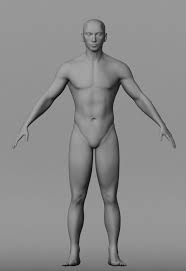
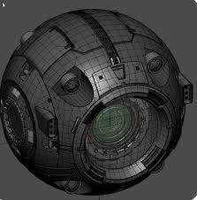
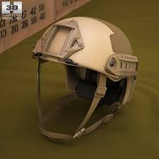
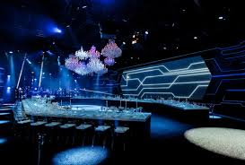

Цифровые технологии будущего
Главная цель нашего ресурса — создание единой структурированной платформы, которая решает проблему избытка разрозненной информации в сети и предлагает системный, понятный подход к освоению трехмерной графики.
Теоретический базис и Сфера применения
Основы 3D-технологий
Первой важной задачей проекта стало детальное изучение теоретической базы. Трехмерное моделирование — это не просто рисование, а комплексный процесс создания объемных цифровых представлений объектов с помощью специализированного программного обеспечения, требующий понимания геометрии, топологии и законов распределения света.
Интеграция в реальный сектор
В ходе анализа мы раскрыли специфику применения графики в ключевых отраслях. Сегодня 3D-технологии незаменимы: в архитектуре для точной визуализации зданий, в медицине для планирования операций, в геймдеве и киноиндустрии для создания миров, а также в промышленности для прототипирования деталей.
Систематизация контента по направлениям
Для реализации задачи по четкой структуризации информации, весь учебный материал и портфолио были распределены по трем фундаментальным профессиональным направлениям:

Character Art
Ориентировано на изучение сложной органической пластики...

Hard Surface
Посвящено моделированию объектов с жесткой конструктивной формой...
Environment Art
Направлено на проектирование комплексного окружения...

